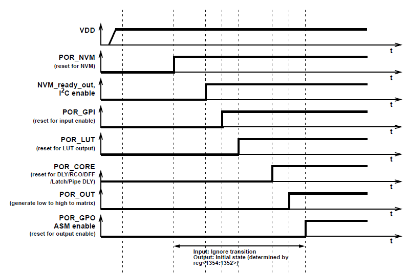
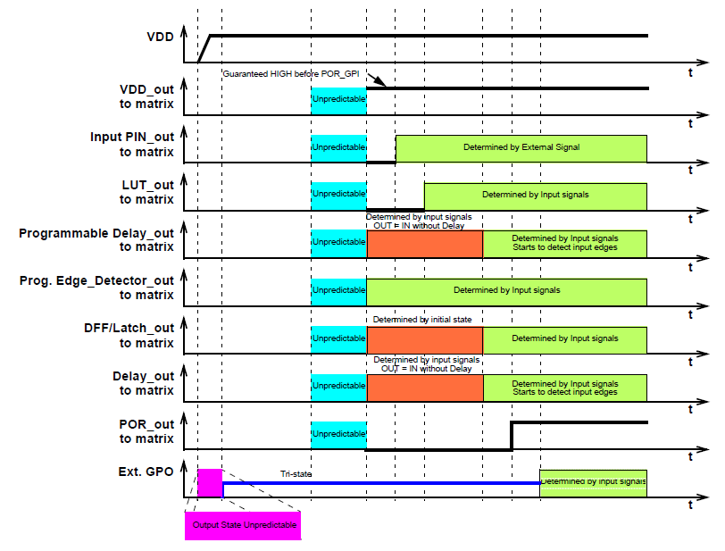

The Power On Reset (POR) macrocell will produce a logic HIGH signal as an output when the device power supply (VDD) rises to approximately 1.4 V and device completely starts up. All outputs are in Hi-Z state and chip starts loading data from NVM. The reset signal is released for internal blocks and they start to initialize according to the following sequence:
General POR Sequence

Internal Block States during POR Sequence

The POR signal going HIGH indicates the mentioned powerup sequence is complete.
NOTE: DLY cells will pass their inputs through during the startup sequence without delaying the signal per the configuration, so a LUT added in front of the input of a DLY that ANDs the DLY input with POR will guarantee the input signal will not appear until the chip has fully powered up and will enforce delays.
For more information, see Datasheet Section 17